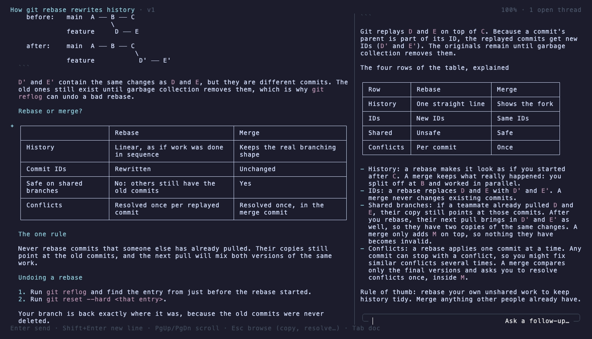

Side
light
Long answers from your coding agent, made readable.
Read them as a page, not a chat log. Ask about any line on the side, without derailing the conversation.
omp plugin install omp-sidelight
